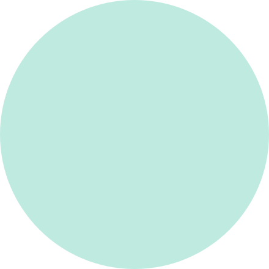
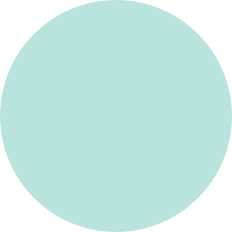

1
El psicólogo invita
Registra al paciente y envía una invitación segura para activar su cuenta.

SEGUIMIENTO ENTRE SESIONES
AliviaTech conecta a psicólogos y pacientes para organizar registros de bienestar, episodios confirmados y datos complementarios entre sesiones, sin exigir monitoreo en tiempo real.
Diseñado para consulta posterior del especialista. No reemplaza atención de emergencia ni vigilancia continua.

CÓMO FUNCIONA
Cada persona aporta información cuando corresponde y el especialista la revisa dentro de su práctica profesional.
Registra al paciente y envía una invitación segura para activar su cuenta.
Anota cómo se siente y, si lo desea, añade un comentario breve.
La pulsera aporta sueño, frecuencia cardiaca y actividad como contexto complementario.
Consulta registros y episodios confirmados cuando corresponde, sin atención en vivo.
La información se adapta a lo que necesita ver cada rol, sin mezclar funciones clínicas con tareas administrativas innecesarias.
PARA PSICÓLOGOS
Dashboard, detalle del paciente, registros, episodios confirmados, sesiones y reportes en un solo espacio profesional.
PARA PACIENTES
Un espacio simple para registrar bienestar, confirmar eventos y revisar recomendaciones o resúmenes compartidos por tu psicóloga.
INFORMACIÓN QUE SÍ AYUDA
Cada fuente mantiene su propia escala y significado. AliviaTech organiza el contexto; no convierte los datos en diagnósticos automáticos.
Estado de ánimo, ansiedad percibida y comentario opcional del paciente.
Sueño, frecuencia cardiaca y actividad física como información complementaria.
Solo se muestran al especialista cuando el paciente confirma que ocurrió un episodio.
Contexto reunido para revisar cuando corresponde, sin monitoreo continuo.
ANÁLISIS ASISTIDO
El especialista puede generar resúmenes descriptivos de registros manuales, wearable o una vista integrada para 7, 30 días o un periodo personalizado.
Fuentes: registros manuales + wearable
• Se observan registros de mayor ansiedad en días con menor duración de sueño.
• El paciente mencionó exposiciones académicas en varios comentarios.
• Hubo 2 episodios confirmados durante el periodo.
CONFIANZA Y ALCANCE
La plataforma acompaña el seguimiento entre sesiones, pero no sustituye la relación terapéutica ni los canales de emergencia.
AliviaTech no funciona como servicio de emergencia, no requiere vigilancia 24/7 y no predice crisis. Organiza información para que el psicólogo la revise cuando corresponda.

ALIVIATECH
Conoce una experiencia pensada para psicólogos y pacientes, sin añadir complejidad innecesaria al seguimiento.
Iniciar sesión